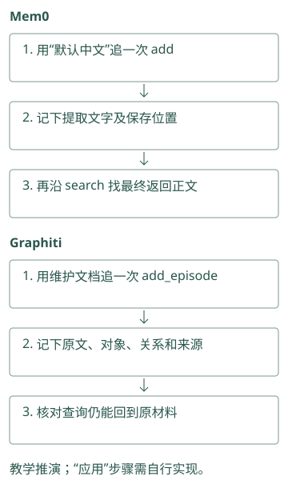
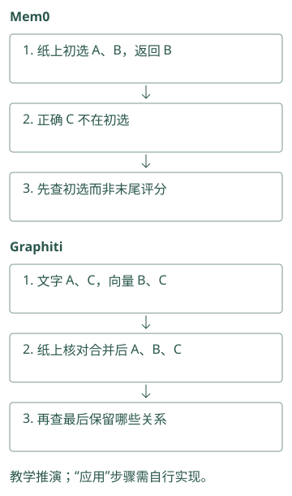
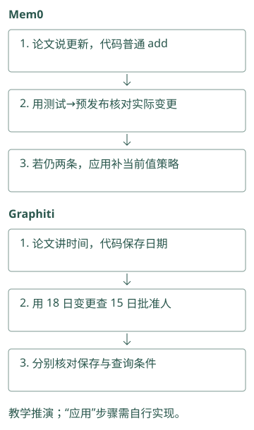
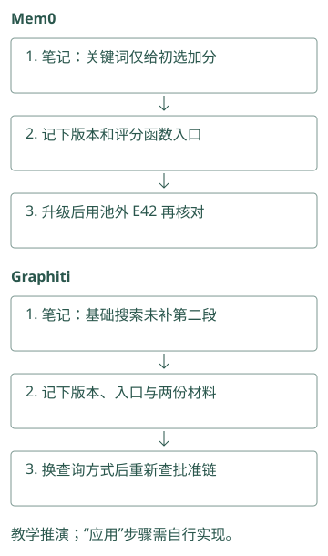
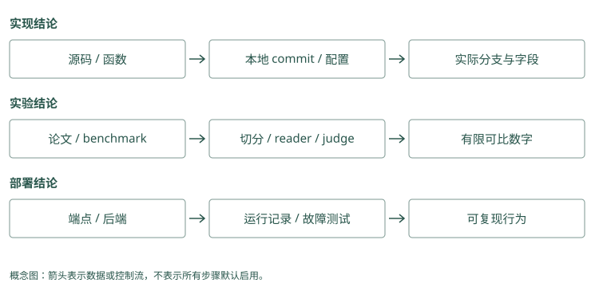

源码与论文索引
从一个问题开始读源码
读源码不必从第一个文件开始逐行浏览。你已经理解第 5 章的候选池区别，可以带一个问题进去：“Mem0 的关键词命中，会不会把语义池外记录补回来？”
在项目根目录运行：
rg -n '_search_vector_store|_compute_entity_boosts' \
sources/repos/mem0/mem0/memory/main.py搜索会告诉你定义和调用的位置。打开函数后，先看输入的 query 和 filters，再追向量候选、关键词或实体信号、最终排序和返回。遇到辅助函数，只追会改变候选集合或分数的部分，不必立即理解每个异常和配置类。
Mem0：带着“默认中文”读写入代码，只记录它先变成哪条文字、最终写到哪里。再读搜索，看返回正文是否相同，不必先记所有类名。
Graphiti：带着“Atlas 由平台组维护”读代码，记录原文、两个对象和维护关系分别在哪里生成。沿来源编号回查，确认关系仍有原文支持。
源码与边界（选读）

源码对照：
初读只追一个问题：“这句原话最后存成什么？”Mem0 从 add 的输入走到卡片正文，Graphiti 从原材料走到对象与关系。遇到函数名，先看它收什么、返回什么，再回到 Atlas 示例给变量填值；不必一开始读完模型客户端、数据库连接和全部异常处理。
Mem0：从实际函数与提示双向核对
主流程 从 add() 进入 _add_to_vector_store()，读取普通追加和过程摘要两个分支；历史存储 核对消息与变更表。不要停在 docstring 的自动 CRUD 描述，正文解释以函数实际写操作为准。
Graphiti：从 orchestration 追 maintenance
主流程 的 add_episode() 编排抽取、解析和保存；边维护 展开重复候选与时间关闭逻辑。先记返回的 resolved、invalidated、new 三集合，再核对它们如何写回。
用纸笔记录三个集合
把“向量命中的 ID”“关键词命中的 ID”“最终返回的 ID”分别写下来。如果代码只遍历向量候选做加分，池外关键词记录没有入口；如果代码把两组 ID 合并，再补取正文，行为就不同。
随后看 MCP 的 storage/mixins/hybrid.py，观察全文、向量、hash 合并和正文补取。不要只凭它们都叫 hybrid 认定同一个算法。读完后，你应该能用一条漏召回案例预测两种路径的差别，而不仅是记住函数名。
这种追踪方法也适用于 A-MEM 的 links 追加与最终 k 截断、Letta 的文件提交与后续编译、Memobase 的写入与 flush。追最后真正被读取的状态，才能验证前面处理有没有影响结果。
Mem0：纸上写“初选 A、B，最后返回 B”。追查正确记录 C 时，立即知道它在初选前就漏了，不必先分析最后排名。
Graphiti：纸上写“文字找到 A、C，向量找到 B、C，合并 A、B、C”。再看最后保留哪些关系，就能区分遗漏发生在搜索还是合并之后。
源码与边界（选读）

源码对照：
Semantic 是按意思找到的集合，candidate 是进入下一轮选择的集合。Mem0 需要核对两者是否相同；Graphiti 需要核对文字榜、向量榜和最终编号并集。用 A、B、C 手记每一步即可：哪一步第一次出现 C，哪一步去掉 C，比只阅读一个复杂评分函数更容易定位漏项。
Mem0：semantic 集合决定 candidate 身份
分别记录后端 search、keyword_search 和 entity boost 的 ID，随后看 candidates 是否只遍历 semantic results。源码显示后两者给分，而非无条件补入新身份。explain 提供已评分记录的分项，没有覆盖池外遗漏，复查时要保存原始集合。
Graphiti：UUID 并集与各路名次同时保留
搜索实现 的 edge_search() 汇集多路列表，再构造 edge_uuid_map。RRF 用名次，cross-encoder 先截断再读 fact。对照配方，确认本次到底启用了哪些路。
用论文学习机制，再核对当前代码
读 HippoRAG 论文，可以先找问题设定、索引图、查询种子和传播流程。把“Atlas → 平台组 → 批准人”的教学例子放进去，看看每一处需要什么节点或证据。再读实验，确认作者固定了哪个 reader、比较什么基线。
之后打开当前 HippoRAG.py，看事实与段落种子怎样组合。论文第一版和后续实现可能不同，不能把图示的每个细节都套到当前目录。Graphiti 的时间论文、MemoryOS 的提升论文和 MemOS 的模型资源论文也应这样读。
不懂术语时，先找它在数据路径里的作用：输入什么、改什么、返回什么。知道作用之后，再研究公式和配置，比先记一页缩写更容易。
Mem0：论文介绍记忆更新，你用“默认测试→默认预发布”检查当前代码。若普通写入仍留下两条，就把这个观察记下来，别用论文图替代实际调用行为。
Graphiti：论文讲时间关系，你用“18 日换批准人”检查日期字段和查询条件。保存日期与正确筛出 15 日的关系，都要分别核对。
源码与边界（选读）

源码对照：
论文帮助理解为什么将聊天压成短事实或为关系保留时间，代码决定当前调用是否真正这么做。Mem0 论文中的某种写入决策，不保证与这个快照的批量追加相同；Graphiti 的时间字段，也不表示每个查询默认使用它。把机制意图、当前分支和实测范围分别记录，读者就不会把介绍当成保证。
Mem0：论文路线与当前 batch 实现分开记
论文可能描述较早的提取与更新算法，当前源码已有 additive prompt、批量 embedding 和实体链接。读实验时记数据、reader、候选粒度及 OSS 或 managed 交付物。算法思想相近不证明当前本地后端复现了同一分数。
Graphiti：时间思想要核对字段和过滤
时间论文解释为什么保留历史，边定义 明确具体字段，过滤实现 决定查询怎样使用它们。字段存在只支持模型表达，仍要实际测试当前与历史视图，不能把论文目标当作每个接口保证。
给自己的结论留一个可复查的小注释
可以写成：“在这个 commit 和后端下，候选来自某集合；依据是这个函数；尚未运行所有后端。”实验结论再另写数据、参数与运行输出。
本书下列索引保留源码、论文和 2026-09-21 快照，便于复查机制，不把代码阅读当作全项目性能复现。托管服务宣称、开源代码行为和你的运行结果要分别标注，以后版本变化时才知道哪条结论需要重查。
Mem0：笔记写“本版本关键词只给初选记录加分”，附版本和评分函数位置。升级后用那条漏掉的 E42 记录再试，检查结论是否仍成立。
Graphiti：笔记写“本次基础搜索未自动补第二段批准链”，附版本、入口和测试材料。以后更换查询方式时，能复查变化，而不是只留一句“图会多跳”。
源码与边界（选读）

源码对照：
Provider 是提供模型或存储服务的具体实现，driver 是访问存储的程序。笔记可以写“Mem0 普通提取分支，某向量后端，仅核对源码”；Graphiti 则写“边搜索，启用哪些找法，使用哪个 driver”。这些条件解释结论适用范围，换服务或配置后需重新验证，而不是把同一项目名当作固定行为。
Mem0：记录分支、provider 与已验证范围
可以写“在普通 infer=True 同步路径，候选由语义池构造；未测试所有 vector stores”。同时注明 commit、模型和 backend，真实实验另保存源数据与输出。delete history 残留等观察也限定到实际函数，不宣称所有托管版本行为相同。
Graphiti：记录配置、driver 与对象粒度
结论如“基础 search 采用 edge RRF，未自动启用 BFS”应指向 recipe 和入口分支；晚到日期实验注明 search_filter。针对 remove_episode 记录共享来源和摘要检查结果。源码观察、教学推演和运行结论各自标明证据类型。
动手检查
任选一个“会学习”“支持图”或“可删除”的描述，把它改写成一条能追代码、能运行检查的具体问题。
答案提示：“A-MEM 建了链接后，池外邻居最终是否返回？”比“它的图记忆好不好”更可操作；“删掉 source 后哪些摘要还含原文？”比“有 delete API 吗”更接近删除责任。
完整源码路径、论文清单与证据索引（选读）
本地源码
| 项目 | 本地目录 | 重点入口 | License |
|---|---|---|---|
| Mem0 | sources/repos/mem0 |
mem0/memory/main.py |
Apache-2.0 |
| Letta Code | sources/repos/letta-code |
src/agent/prompts/letta_root_memfs.md |
Apache-2.0 |
| Graphiti | sources/repos/graphiti |
graphiti_core/graphiti.py |
Apache-2.0 |
| Cognee | sources/repos/cognee |
cognee/api/v1/{remember,recall,improve} |
Apache-2.0（核对模块） |
| MemOS | sources/repos/memos |
src/memos/memories/, mem_os/ |
Apache-2.0 |
| MemoryOS | sources/repos/memoryos |
memoryos-pypi/{memoryos,updater,retriever,mid_term}.py |
Apache-2.0 |
| A-MEM | sources/repos/a-mem |
agentic_memory/memory_system.py |
MIT |
| HippoRAG | sources/repos/hipporag |
src/hipporag/HippoRAG.py |
见仓库 |
| Memobase | sources/repos/memobase |
src/server/ |
Apache-2.0 |
| Hippo Memory | sources/repos/hippo-memory |
src/, benchmarks/, docs/evals/ |
MIT |
| Basic Memory | sources/repos/basic-memory |
src/basic_memory/ |
AGPL-3.0 |
| MCP Memory Service | sources/repos/mcp-memory-service |
src/mcp_memory_service/ |
Apache-2.0 |
| Agent Beacon | sources/repos/agent-beacon |
endpoint/, docs/ |
MIT |
| TencentDB Agent Memory | sources/repos/tencent-agent-memory |
MemoryCore/, MemoryKnowledge/ |
MIT |
| Hermes Jev Skills | sources/repos/hermes-jev-skills |
jevkit/, skills/jev-memory/ |
MIT |
letta-ai/letta 也保留在本地，但只用于证明主仓迁移，不应作为当前源码入口。因此共有 16 个仓库，当前详解覆盖 15 个实现/工具和 Letta 的历史来源。
本次扩写的机制证据
以下路径均相对于 sources/repos/。详细章节保留可点击的源码链接；README/MDX 路径作为源码定位使用，不转换成 wiki 页面。
| 项目 | 已核对的关键函数或文件 | 对应讲解 |
|---|---|---|
| Mem0 | mem0/memory/main.py：_add_to_vector_store、_search_vector_store、_compute_entity_boosts |
ADD-only batch、局部 hash 去重、语义候选池与多信号评分 |
| Memobase | src/server/api/memobase_server/controllers/buffer.py、controllers/modal/chat/ |
flush 状态、并发限制、profile/event 处理、原 blob 保留开关 |
| Graphiti | graphiti_core/graphiti.py、edges.py |
entity/edge resolution、episode 引用、有效与系统时间 |
| Cognee | cognee/api/v1/remember/remember.py、recall/recall.py |
管线路由、配置、后台任务与数据集边界 |
| HippoRAG | src/hipporag/HippoRAG.py：graph_search_with_fact_entities、run_ppr |
fact 与 passage seeds、无向加权 PPR、manifest |
| MemoryOS | memoryos-pypi/updater.py、retriever.py、mid_term.py、memoryos.py |
page/session 提升、heat、LFU、长期分析与并行读取 |
| MemOS | src/memos/mem_cube/general.py、mem_scheduler/ |
可选 memory modules、load/dump/schema、调度结构 |
| Hippo | src/memory.ts、physics.ts、consolidate.ts、rerankers/jev.ts |
strength/outcome、粒子评分、sleep、40 候选重排与本地回退 |
| A-MEM | agentic_memory/memory_system.py：process_memory、search_agentic |
演化动作、邻居修改、links 与 k 截断 |
| Letta / Letta Code | 旧仓 README.md；新仓 src/agent/prompts/letta_root_memfs.md |
迁移、索引格式、commit 与 recompile 生效边界 |
| Basic Memory | src/basic_memory/markdown/entity_parser.py、services/context_service.py |
文件解析、URI 与关系上下文 |
| MCP Memory Service | src/mcp_memory_service/storage/mixins/hybrid.py、consolidation/consolidator.py |
weighted/RRF、候选补取、horizon 与巩固阶段 |
| Agent Beacon | docs/architecture/architecture.mdx、system-architecture.mdx |
采集方式、事件 fidelity、JSONL 边界、OSS/managed 范围 |
| TencentDB | MemoryCore/README_CN.md、MemoryProxy/README_CN.md |
Core/Knowledge 分工、生成溯源、Proxy 高层注入与工具读取 |
| Hermes Jev Skills | jevkit/rerank.py、search.py、memo.py |
截断/隐私/注入判别、unjudged 回退、sufficiency、exact-match memo |
这里只表示源码与官方说明核对，不表示所有后端已经运行或 benchmark 已独立复现。扩写保持原有 2026-09-21 快照，不把本次文稿更新当成重新获取上游维护数据。
论文原文
PDF 位于 sources/papers/pdf/，可搜索文本位于 sources/papers/text/。
- Packer et al. MemGPT: Towards LLMs as Operating Systems. arXiv:2310.08560.
- Maharana et al. LoCoMo: Evaluating Very Long-Term Conversational Memory of LLM Agents. arXiv:2402.17753.
- Gutiérrez et al. HippoRAG: Neurobiologically Inspired Long-Term Memory for LLMs. arXiv:2405.14831.
- Wu et al. LongMemEval: Benchmarking Chat Assistants on Long-Term Interactive Memory. arXiv:2410.10813.
- Rasmussen et al. Zep: A Temporal Knowledge Graph Architecture. arXiv:2501.13956.
- Xu et al. A-MEM: Agentic Memory for LLM Agents. arXiv:2502.12110.
- Gutiérrez et al. From RAG to Memory: Non-Parametric Continual Learning for LLMs. arXiv:2502.14802.
- Chhikara et al. Mem0: Building Production-Ready AI Agents with Scalable Long-Term Memory. arXiv:2504.19413.
- Markovic et al. Optimizing the Interface Between Knowledge Graphs and LLMs for Complex Reasoning. arXiv:2505.24478.
- Kang et al. Memory OS of AI Agent. arXiv:2506.06326.
- Li et al. MemOS: A Memory OS for AI System. arXiv:2507.03724.
证据使用约定
- 论文结果引用论文；项目新增功能和最新数字引用对应 README/评测目录。
- README 自报结果不视为独立复现。
- 本书没有把不同指标、数据切分和 reader 的分数混成排行榜。
- Git 活跃度是 2026-09-21 的快照，不代表未来维护状态。
- 任何项目上线前都应重新检查主仓、release、security advisory 与许可证。
进一步阅读顺序
- 心智模型：MemGPT → Mem0。
- 时间图谱：Zep/Graphiti → HippoRAG 1/2。
- 生命周期：MemOS → MemoryOS → Hippo 源码与负面评测。
- 评测：LoCoMo → LongMemEval，再对照项目 benchmark harness。
- 工程：Mem0
Memory、Graphitiadd_episode/search、Cogneeremember/recall/improve/forget、Letta MemFS prompts。
按技术问题复核，而不是只读 README
检索比较应从 public API 追到最终 candidate set、过滤和截断：Mem0 的 keyword boost 与 MCP 的候选并集不同，Hippo graph stream 与 graph-recall 不同，Graphiti 的 configuration 决定 RRF/MMR/cross-encoder。只看到函数名或接口介绍不足以作结论。
演化比较应追到具体写操作：MemoryOS 的 heap/heat 与 profile update，A-MEM 的邻居属性变化与 index refresh，Hippo strength/outcome 与 sleep，MCP decay/forgetting 的 action，Cognee improve 的 gate/watermark，TencentDB L1 dedup/Skill version，MemOS scheduler，Letta commit/recompile。副作用之后是否读取新状态也要核对。
接入比较应画出原文与派生副本：Basic 文件与索引，Beacon JSONL 与 forwarding，Memobase blob/profile/event，Graphiti episode/fact，HippoRAG passage/fact，TencentDB Core/Knowledge/Proxy。许可证、auth、删除或性能属于不同证据问题，不能用论文或宣传分数替当前部署证明。

项目对照速查（选读）
本章对照结论
| 技术问题 | 需要比较的项目 | 优先证据 | 本次能支持/不能支持 |
|---|---|---|---|
| 事实/画像写入 | Mem0、Memobase、MemoryOS、TencentDB、Letta、MemOS | 提取/提升/编译代码及 prompt | 解释数据流；未独立测所有模型 |
| 候选与排序 | Mem0、MCP、Hippo、Graphiti、Cognee、HippoRAG、Hermes | 初选、合并、重排代码及配置 | 区分候选范围；未复现统一质量排名 |
| 图/来源 | Graphiti、Cognee、HippoRAG、Basic、A-MEM、Hippo、MCP、TencentDB、MemOS | graph/node/edge/source 及读取 | 区分连接语义；未保证全部删除链 |
| 演化/遗忘 | Hippo、MCP、MemoryOS、A-MEM、Cognee、Memobase、Graphiti、TencentDB、MemOS、Letta | 状态写操作、反馈、gate、版本 | 描述机制；未证明长期任务提升 |
| 接入与副本 | Beacon、Basic、MCP、TencentDB、Letta、MemOS、Hippo 与开发库 | 事件格式、传输、同步、身份授权代码 | 说明检查位置；不是生产安全认证 |
| 历史与实验 | MemGPT/旧 Letta、各论文和评测 | 归档提交、数据、回答模型、评分方法 | 结论限于原实验；不保证当前产品质量 |